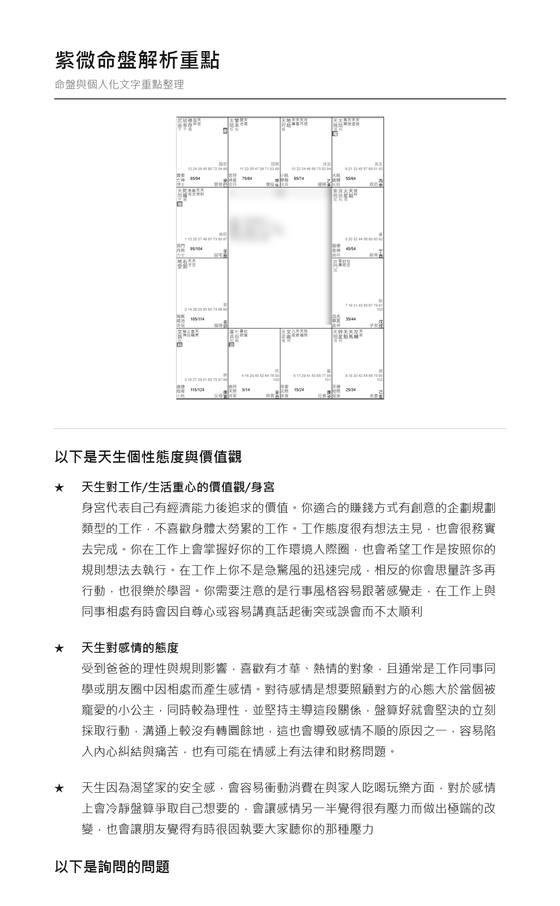
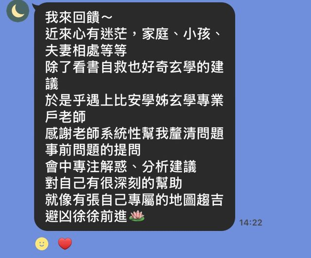
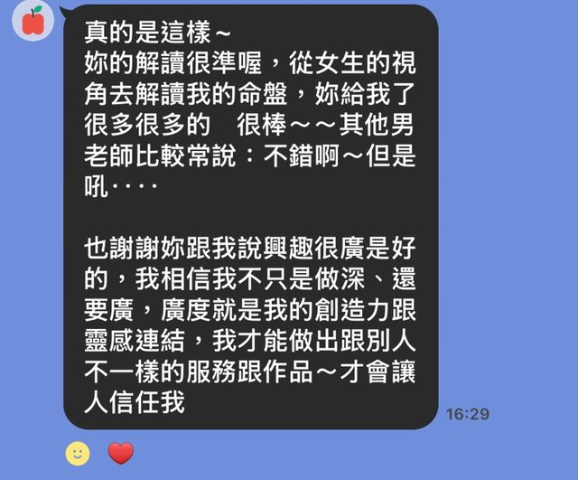
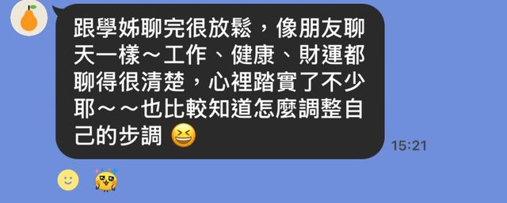
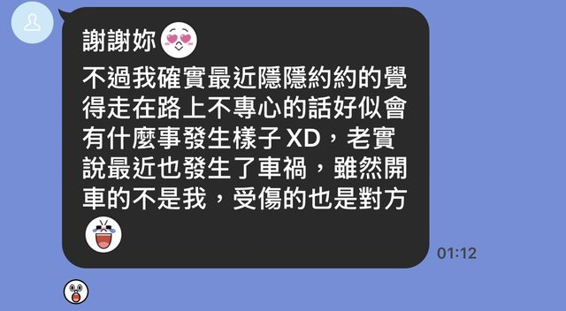
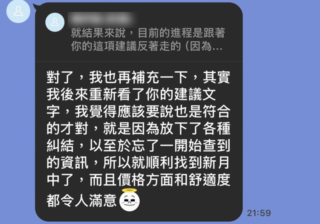
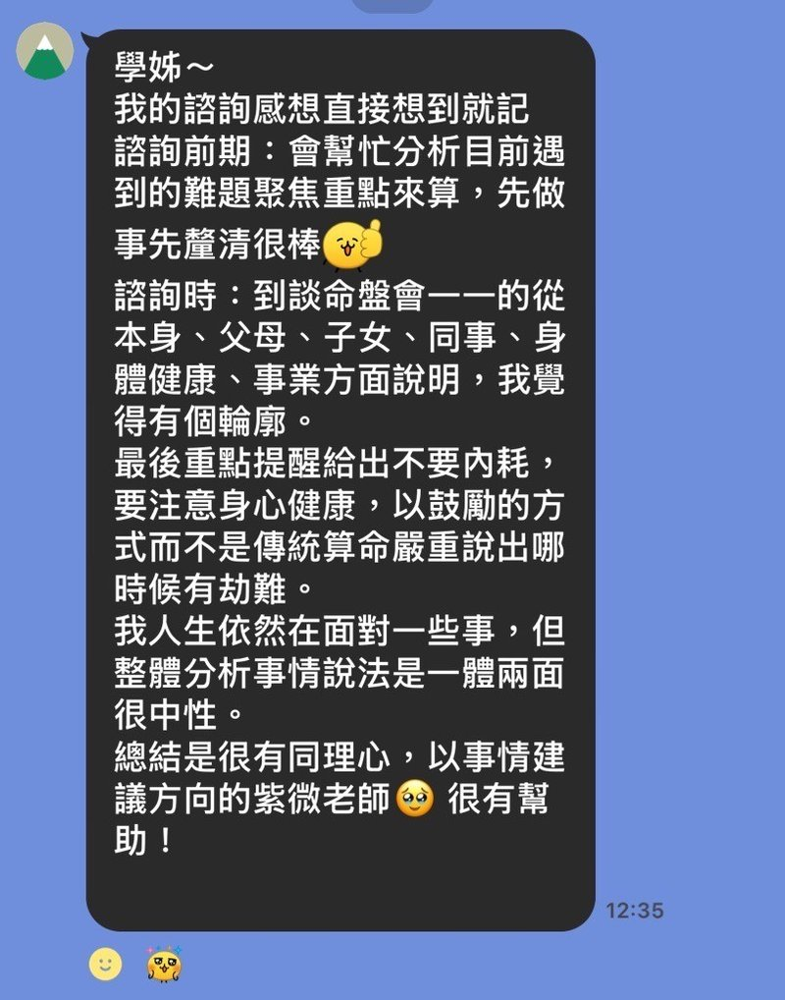
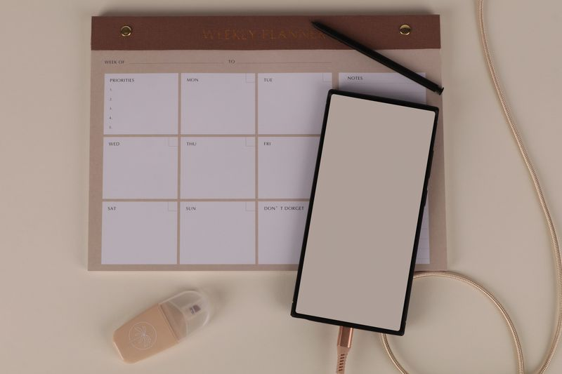

你是不是也有這些困擾？
- 我打算離職，想找尋新的工作方向
- 我的感情是否會穩定發展？還是存在變數？
- 我到底適合做什麼？我也想創業或接案
- 今年的運勢會怎麼樣？我好不安，想先知道
- 今年會不會大破財？該怎麼辦？
他們也曾這樣卡關
以下為調整過的情境示意，我會遵守每個個案的保密
做了五年，有升遷或加薪的機會嗎？還是該轉職換工作？
我在同一間公司做了五年，薪水沒什麼變，也看不到下一步。我該繼續等，還是早點離開？看著身邊朋友工作順遂、加薪升遷，我好猶豫...
今年會不會大破財？有中獎機會嗎？
今年的開銷突然變好多，存款一直在減少，我好焦慮。聽到朋友股市賺了很多錢，真的好羨慕，我什麼時候才會變有錢？
我們這段關係還適合繼續嗎？他對我有沒有好感？
我一直猜不透他的心思，回應忽冷忽熱，我們還常常吵架。繼續下去怕受傷，放手又捨不得，我真的好累...
我的人生好迷惘低潮，不知道我適合做什麼？
最近整個人很低落，做什麼都提不起勁。身邊的人好像都知道自己要什麼，只有我停在原地，不知道自己到底適合什麼...
每天騎車上下班，會不會哪天有意外？
我每天騎車通勤，路上車那麼多，心裡總是有點不安。新聞上的車禍事故越來越多，我很擔心：會不會哪一天，換成是我？
孩子的路，我該不該插手？
我擔心孩子走歪，又怕管太多讓關係變僵。放手好像不負責，插手又吵架，我不知道怎麼做才對，晚上常常睡不著...
這些事，不用一個人悶著想。先傳訊息，跟我說說看。
LINE 預約解盤為什麼找我
我不是最資深的老師，
但我會用最認真、最誠實的方式陪你看盤
親手整理文字重點
是我一邊認真看盤、一邊親手寫下的重點紀錄，不是 AI 產的，之後隨時可以回頭翻。
看盤前先花 1～2 天
確認你的命盤和問題後，我會先細讀，不是當場才開始看，所以不算快，但每張都認真。
2 年以上學習與實戰
持續學習、也持續替人解盤，把古人的智慧用在真實的人生問題上。
說實話，不推銷
不適合的問題我會直接說，不用恐嚇話術、不賣改運商品，15 分鐘 LINE 諮詢完全免費。
白話解說＋小行動
不講你聽不懂的術語，並陪你把洞察變成可以立刻開始的小行動。
嚴守個案隱私
你的生辰與談話內容完全保密。同時守住專業界線：不談生死、不取代醫療診斷。
我能幫你做的
聽了一小時，一週後只記得三件事
那位命理師阿北，用很平穩、音調一致的聲音，把我的命盤講了一個小時。
聽到接下來可能會發生的事，我當下真的超震撼。
但中間一堆我聽不懂的，什麼飛星、忌沖對宮…，只能用點頭表示收到。
朋友好奇問我：「老師怎麼說？」
我努力回想，只記得幾件印象比較深的事。
連到底要注意哪一年，我都記得模模糊糊的，不太確定欸…
那一刻真的好怨嘆喔…
錢花了、時間也花了，聽到的卻有一半已經還給老師。
所以後來換我幫人解盤，第一件事就是：
把重點寫下來給你。
你不用邊聽邊抄，也不怕回家就忘。
哪一年要注意什麼，隨時打開就看得到。
諮詢後，你會拿到這樣的解析
我會附上親手整理的文字版重點，讓你在不確定、猶豫的時候，有個可以回頭對照的參考。
- 你卡關的主題，對應命盤裡看到的原因和各種選擇
- 我用白話整理成重點，不賣弄術語
- 今年的節奏起伏，還有你自己沒注意到的盲點，一次攤開來看

想拿到屬於你的重點紀錄？預約解盤，我親手整理給你。
LINE 預約解盤諮詢過的人這樣說
每一則都是諮詢後收到的真實回饋，經同意後分享
「就像有張自己專屬的地圖，趨吉避凶，徐徐前進」近來心有迷茫，家庭、小孩、夫妻相處等等，除了看書自救，也好奇玄學的建議。感謝老師系統性地幫我釐清問題，從事前的提問，到會中專注解惑、分析建議，對自己有很深刻的幫助，就像有張自己專屬的地圖，趨吉避凶，徐徐前進
原始回饋截圖

「廣度就是我的創造力跟靈感連結」妳的解讀很準喔，從女生的視角去解讀我的命盤，給了我很多很多的「很棒」。也謝謝妳跟我說興趣很廣是好的，我相信我不只是做深、還要廣，廣度就是我的創造力跟靈感連結，我才能做出跟別人不一樣的服務跟作品
原始回饋截圖

「像朋友聊天一樣，心裡踏實了不少」跟學姊聊完很放鬆，像朋友聊天一樣～工作、健康、財運都聊得很清楚，心裡踏實了不少，也比較知道怎麼調整自己的步調
原始回饋截圖

「放下了各種糾結，就順利找到了」後來重新看了妳的建議文字，覺得也是符合的。就是因為放下了各種糾結，就順利找到新的月子中心了，而且價格和舒適度都令人滿意
原始回饋截圖


「很有同理心，以事情建議方向的紫微老師」先聚焦我遇到的難題來算，一開始先釐清很棒。談命盤時，會從本身、父母、子女、同事、身體健康、事業一一說明，我覺得有了輪廓。最後提醒我不要內耗、注意身心健康，用鼓勵的方式，而不是傳統算命說哪時候有劫難。整體分析事情很中性
原始回饋截圖

紫微斗數，讓你更有策略地掌握機會、避開風險，讓人生更順利
每月名額有限，歡迎提早預約
怎麼進行
選擇服務項目
可在 LINE 上先做免費諮詢，確認可以服務的問題，再進一步進行預約，不適合用紫微命盤看的，我也不想讓你白花錢
填寫資料
提供出生資料與想了解的問題
確認時間與付款
完成付款即保留預約時段
諮詢與交付
諮詢當天給你重點摘要，陪你把洞察變成行動
諮詢方案
每次諮詢前，
我會花 1～2 天細讀你的命盤和問題
我看盤不算快，但每一張都很認真看
因為我真心想幫每位來找我的夥伴，解開心裡的卡關
諮詢後會提供我親手整理的重點紀錄，不是 AI 產的
你不用自己做筆記，我們專心聊就好

流年運勢分析
同線上／實體一對一諮詢
想知道這一年，會發生什麼事？
- 哪幾個月，工作容易有變動
- 感情有沒有重要事件
- 財運什麼時候適合衝
- 什麼時候意外風險較高要多注意
常見問題
一對一諮詢跟文字版諮詢有什麼差別？
一對一諮詢是 90 分鐘對談，適合需要來回討論的複雜問題
文字版諮詢是聚焦一個問題，5
個工作日內以 LINE／Email
提供書面分析，適合沒時間安排面談，或對面談有些緊張、不自在的人，可以透過閱讀文字報告，沉澱思考，不需要社交
不知道準確的出生時間怎麼辦？
排盤需要精確的出生年、月、日、時，如果不確定可至戶政事務所查閱（台灣地區）
我的生辰和諮詢過程中的問題會保密嗎？
你的生辰資料和諮詢過程中的所有事情都會保密，不會對外分享或公開。
紫微斗數命盤可以討論哪些主題？
只要和你的人生有關，大多都可以討論，不管是
人生方向與目標
工作機會與職涯規劃
事業發展與創業
財務與金錢觀
感情與人際關係
健康與風險提醒
最近卡關、不知道怎麼選擇的事情
紫微斗數都可以從不同角度切入，幫你整理目前的狀況與可能的選擇
如果臨時有事，可以改期嗎？
請於諮詢日前 3 天告知，我們會一起安排新的時間
若當天臨時遲到或未事先通知缺席，等待 15
分鐘後將視同取消，恕無法退費
每個預約時段，都代表有人願意把時間留給自己的生命課題，我也希望公平尊重每一位來諮詢的人
什麼問題不適合來問？
不詢問生死相關議題，以及無法取代醫療診斷，健康疑慮請務必尋求專業醫生建議，紫微斗數僅提供健康與意外風險提醒